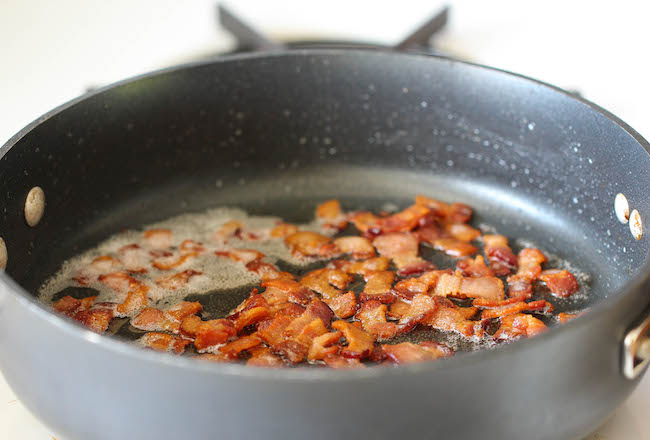
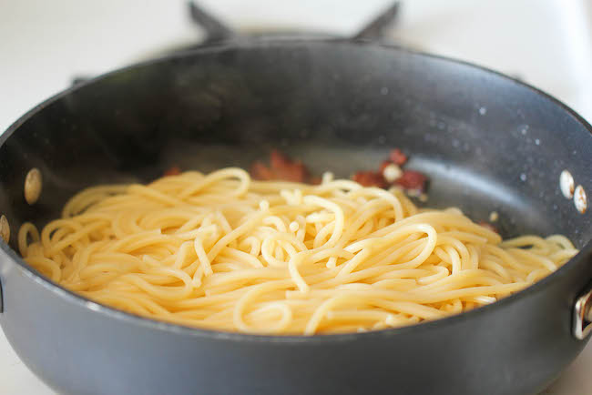
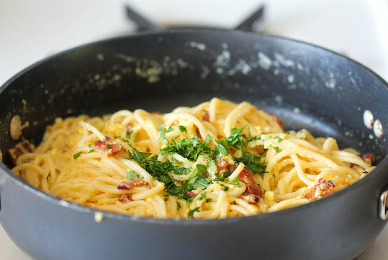

Spaghetti Carbonara

Description
The easiest pasta dish you will ever make with just 5 ingredients in 15 min, loaded with Parmesan and crisp bacon goodness!
Ingredients
- Spaghetti - 8 ounces
- Eggs - 2 Large eggs
- Parmesan - 1/2 cup of freshly grated Parmesan
- Bacon - 4 slices, diced
- Garlic - 4 cloves, minced
- Salt and Black Pepper - freshly grounded, to taste
- Parsley - 2 tablespoons, freshly chopped
Steps
- In a large pot of boiling salted water, cook pasta according to package instructions; reserve 1/2 cup water and drain well.
- In a small bowl, whisk together eggs and Parmesan; set aside.
-
Heat a large cast iron skillet over medium high heat. Add bacon and cook until brown and crispy, about 6-8 minutes; reserve excess fat.

- Stir in garlic until fragrant, about 1 minute. Reduce heat to low.
-
Working quickly, stir in pasta and egg mixture, and gently toss to combine; season with salt and pepper, to taste. Add reserved pasta water, one tablespoon at a time, until desired consistency is reached.

-
Serve immediately, garnished with parsley, if desired.
